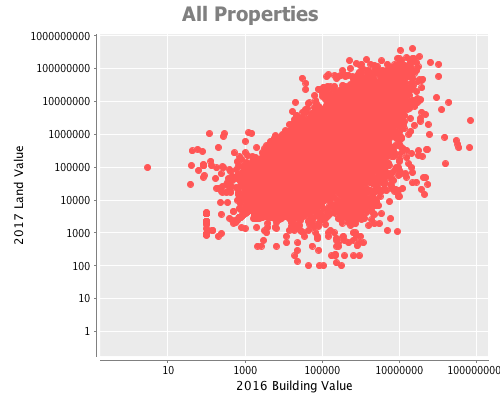
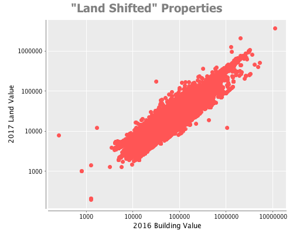

Explaining the 2017 Philadelphia Property Tax Assessment Changes
May 26, 2016
The Philadelphia Office of Property Assessment (OPA) recently released their property tax assessments for the 2017 tax year. It’s been widely reported that these assessments shifted a substantial amount of value from building values to land values, perhaps accurately reflecting growing land values in the city.
More recently, the methodology behind this move has resulted in some controversy with the general consensus being that the new 2017 land values seem to be derived from previous building values rather than the from the fundamental underlying value of the land.
This is a problem for a number of reasons. For one, it is an inaccurate approach because the value of what is currently built (or not) on the land has nothing to do with the underlying land value. If you are going to value the land based on the building, you might as well just only value the building.
Worse, this approach unfairly targets owners of properties with buildings having 10-year tax abatements, as that exemption pertains only to the building value and not to the land value of the property. Furthermore, these properties by have higher building values by definition (the amount of the abatement is proportional to the increased building assessment.) In effect, the city is partially reneging on tax abatements.
Because I build real estate analytics products professionally, and because I own tax-abated property in the city of Philadelphia, I couldn’t help myself from doing a deeper dive into the data to see what actually transpired. It might take a little bit of patience to get through the full analysis that follows, but the short version is that the data shows that, for a subset of properties, the new 2017 land values appear to in fact be derived mainly from 2016 building values.
(By the way, I love digging into and discussing this kind of thing so I’m happy to answer any questions, offer advice, or just talk shop so please )
OK, here we go with the data stuff:
The 2017 Philadelphia Property Tax Assessment dataset contains comprehensive descriptive ownership and market value information for the 579,912 properties in the city of Philadelphia. All 578,276 properties from that dataset having tax assessments in both 2016 and 2017 are considered in this analysis. Of interest in this analysis are the following tax assessments:
| Taxable Building | Taxable value of the improvement |
| Exempt Building | Tax exemptions on the improvement |
| Total Building | Taxable Building + Exempt Building |
| Taxable Land | Taxable value of the land |
| Exempt Land | Tax exemptions on the land |
| Total Land | Taxable Land + Exempt Land |
| Market Value | Total Land + Total Building |
In 2017, the OPA adjusted the market value for only 4.5% of properties in this so there was not a major change in the total valuation of most properties (the proportion was a bit higher when you just look at residential properties but I wanted to look at the dataset as a whole.)
However, for vast majority of properties (79% of all properties) the market value was held constant and some amount was simply “shifted” between the component land and building values. For 54% of all properties, some amount was shifted from the land value to the building value and for 25% of all properties, some amount was shifted from the building value to the land value.
Based on this evidence, it appears the city’s goal was to rebalance the land and building components of the assessment without changing the assessment of the total market value. There was an overall focus on shifting more value to the land portion of the assessment, but there was movement in both directions.
On the surface, this seems like a pretty measured and reasonable approach: don’t worry too much about the total market values and try to get to a more accurate underlying the land/building split while shifting value to the land portion of the assessment which many observers have been calling out as undervalued for years.
However, when you dig deeper into the data this approach resulted in some peculiarities suggesting that what transpired was not just an objective re-evaluation of land values based on the fundamental value of the land, but rather a transfer of building value to land value based on the building value.
Looking at the dataset as a whole, building and land value do not appear to be correlated. (r2 = ~.13 for both the 2016 and 2017 assessments.) This what one would expect, as the value of the underlying land intuitively should not necessarily be correlated with the value of what happens to be currently built on it. In practice, land value comes down to location and parcel size. However, despite the low overall correlation there actually is still a visible pattern (always check the scatter plot):

The above chart demonstrates that there actually is a relationship between building value and land value. The lack of observations upper-left quadrant of the cluster suggest that there are essentially no high land value, low building value assessments–at least not to the same extent that there are high building value, low land value assessments.
Because the OPA held the market value constant for the vast majority of properties, there was not much of an opportunity to change land values for properties with lower building values (e.g. there was not a lot of building value to shift for low-value buildings.) Given this observation, let’s look at the effect for just the properties that underwent a building-to-land value shift:

In this portion of the data, the correlation between 2016 building value to 2017 land value is immediately obvious (r2=.93) with a very strong linear relationship. This is a direct consequence of the 2017 assessment changes–In 2016, the building to land value correlation was r2=.74, and in 2017 it jumped up to r2=.90. In fact, the 2017 land assessments in this cohort can actually be better explained in terms of their previous building value than their previous land value (r2=.88) or the size of the parcel (r2=.11)!
Intentional or not, these assessments can be interpreted as unfairly targeting taxpayers owning properties having higher building values (e.g. those with tax abatements) rather than independent assessments of the underlying land.
This doesn’t matter too much in the context of properties without tax exemptions on the building, but owners of higher building value tax-abated properties in this set of properties will now have disproportionately higher tax bills, as part of their abatement was quite literally taken away when some of their building value was transferred to land value. In my opinion the effect of future tax abatements may be less pronounced if buyers become concerned that building value could again be shifted to land value in the same fashion.
In my opinion the most concerning aspect of this approach (where building value is used a proxy for land value) is that it is divorced from the actual, real-world drivers of land value (location and size.) This is worrisome because if the assessment methodology used by the OPA is not predictable, it could be de-stabilizing and serve as a disincentive for investment in Philadelphia real estate by adding an unnecessary “future uncertain tax reassessment” risk.
At the end of the day, I’m actually a proponent of shifting more assessed value to land for a number of reasons, but I think the OPA did not take the right approach in these assessments. I would have not touched any of the building values (and hence tax abatements), then conducted an independent re-evaluation of the fundamental land values. This approach is more difficult, and would affect a wider range of taxpayers than just 12,000 owners of tax abatement properties, but it is the right way to go about fixing the problem of under-assessed land. Instead, by partially unraveling existing tax abatements to in order to move more value to land, the City may have cost itself some future development.
The obvious remaining open question is, how were the 54% of “land-shifted” properties selected? The city has stated that 12,000 of 15,000 tax-abated properties are in fact affected so that’s a start. I might dive into this topic next if there is interest, but I’ve exhausted my side-project time budget on this for now. I love diving into this kind of stuff, so if you’re interested in more analysis, have feedback, questions about a particular property or area please
Tagged as: data, statistics, real estate, philadelphia, tax.
blog comments powered by Disqus